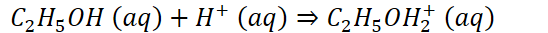
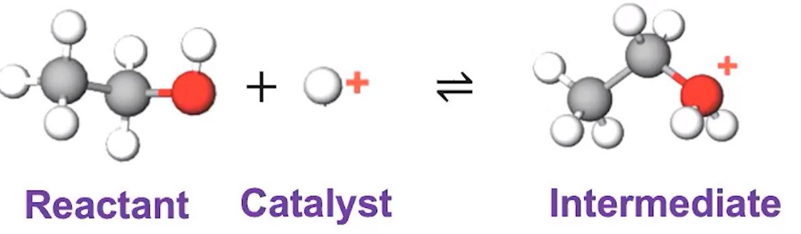
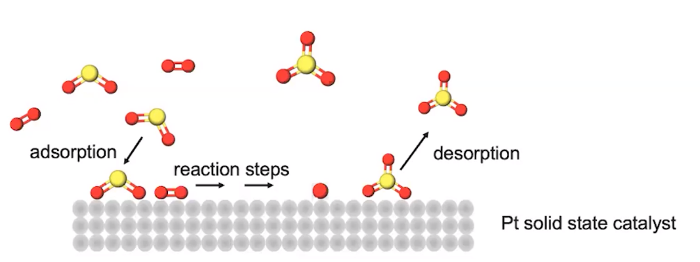

A catalyst increases the reaction rate by providing an alternative pathway with lower potential energy for the activated complex
A catalyst often leads to the proposal of a new mechanism
A catalyst can increase the rate constant by:
Formation of a more stable activated complex
Increasing collision frequency
Improving orientation effects
2 broad categories of catalysts
Homogeneous catalyst
The same phase as the reactants
Ex:
{width="5.708333333333333in" height="0.34375in"}
{width="5.177083333333333in" height="1.5104166666666667in"}
Heterogenous catalyst
Reaction is different phase than a catalyst
{width="4.854166666666667in" height="1.8229166666666667in"}
Ex. Catalytic converter
Contains metals and metal oxides
Used as a catalyst to react with carbon monoxide, nitrogen monoxide, nitrogen dioxide
Converted into substances better for the environment